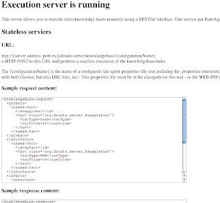
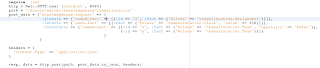

Drools execution server – for the early adopters
This is a very early announcement of the first drop of the drools-server module. This is a NEW module which allows execution of stateless rules via a REST-style web service interface (XML and JSON). (Watch this space for stateful). This means you can deploy rules and excute them from any sort of client (no libraries needed – not even a JVM).
This builds on the rule agent itself to managing what packages are used, and can work with guvnor or against any rule source (including drl files, which I used for testing).
drools-server is a war file, which can be deployed in a servlet container. RuleBase configurations are then accessed via URL: http://server/drools-server/knowledgebase/{ruleagentConfigName}.
The data you post is either XML or JSON, and maps to the fact model that the rules use – there are globals, input facts, and output facts (in the case of globals and output facts, the data is returned in the response message – which is how you get results back !).
When drools-server.war is deployed, going to /drools-server should show a page like:

Which has some example request/response and details.
Benefits of a simple rest approach:
No libraries ! Just use HTTP and XML or JSON on the “client” (many languages have that built in).
In fact, to test this out I did a simple rails app and client using nothing but its plain old http library, and the “json” library (JSON == Javascript Object Notation – a fast textual object graph serialization format – it is literal Javascript syntax for Arrays and Maps). (I would like to do a PHP and .Net one next – time permitting – after my holidays !).

answer = JSON.parse(data)
#digging out the results:
puts answer[“knowledgebase-response”][“globals”][“named-fact”][“fact”][“teamName”]
#if there is more then one fact, they are a list
puts answer[“knowledgebase-response”][“inOutFacts”][“named-fact”][0][“fact”][“specialty”]
You can see there is some hierarchy to the results and the request – which is easy to see with JSON. This example “client” code is in drools-server/sample-clients/ruby_json.rb.
Enjoy !

{kind=link}
{kind=link}